微信开发者工具Stable 2.02.2609240，实际基础库3.8.12，模拟器截图363×785。图片为本轮执行时点的原生画面，包含测试数据清理前后状态；不代表手机或所有手势通过。点击查看原图。
分层验证 · 差距处理与限制 · 20张图片哈希清单
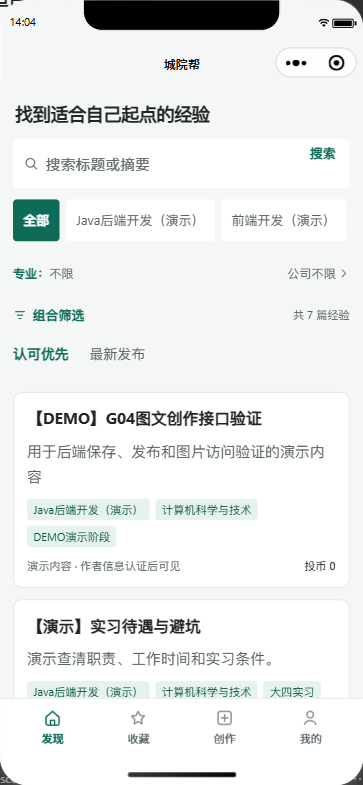
真实接口7篇公开经验，无演示模式横条。
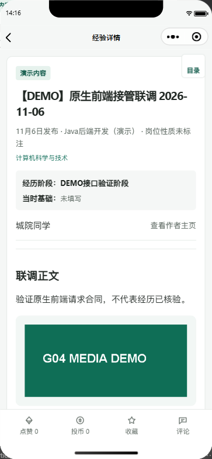
原生真实作者及互动读取；右上角小方框目录保留。
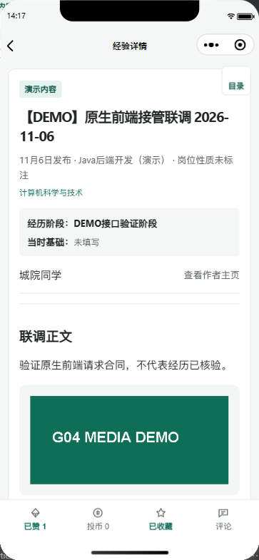
本轮DEMO文章2007，真实liked/favorited均true；关系已清理。
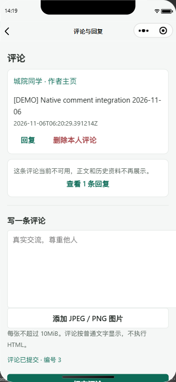
原生提交得到评论3，普通文字呈现。测试评论已软删除；时间格式随后统一。
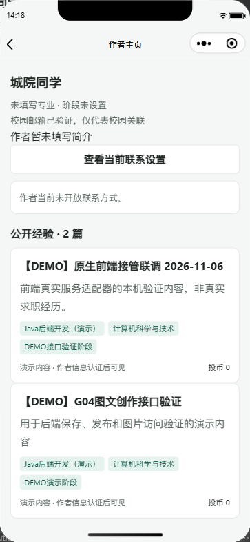
当前作者基础资料和公开文章；联系关闭，不展示隐藏值。
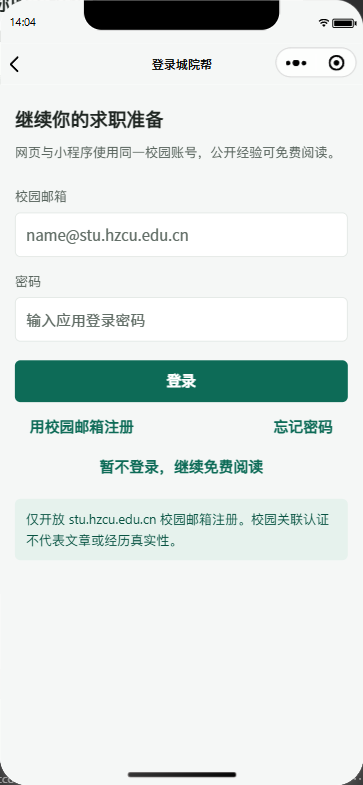
真实原生账号表单，未包含凭据。登录成功另有本人中心证据。
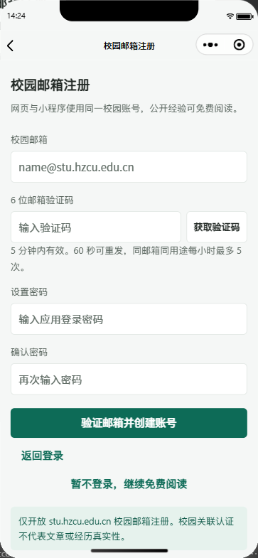
校园邮箱及验证码表单；没有执行真实发送或注册。
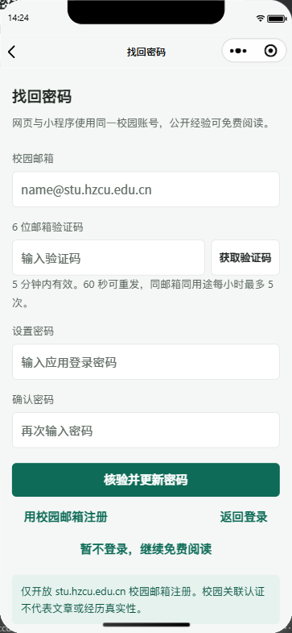
确认密码及验证码表单；没有发送真实邮件或修改密码。
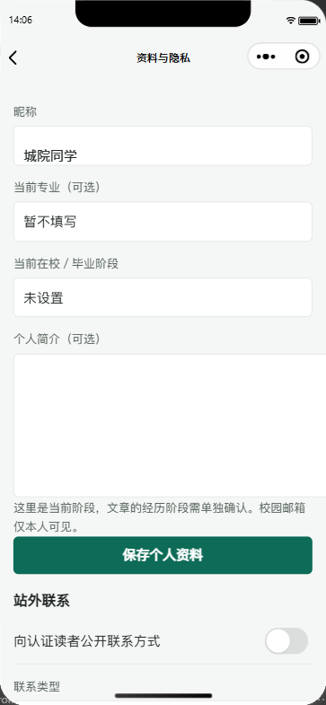
读取本人默认资料；本轮未改写原资料或联系设置。
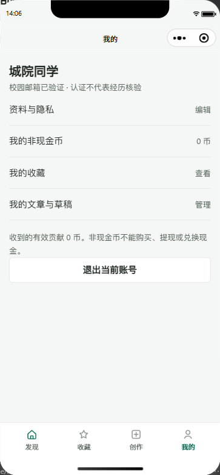
真实登录后读取资料和钱包。没有伪造余额或认证状态。
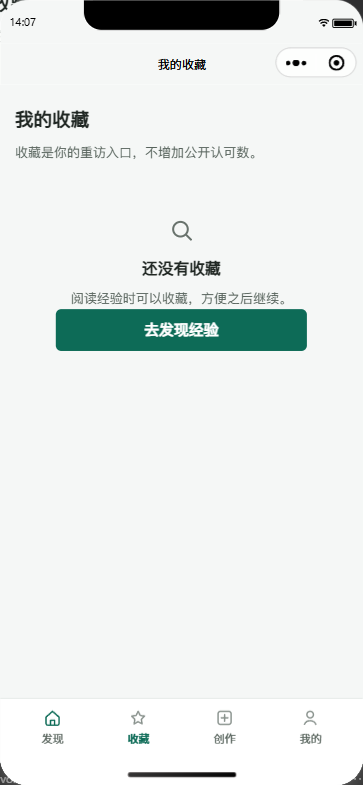
本人真实列表为空，提供发现入口。
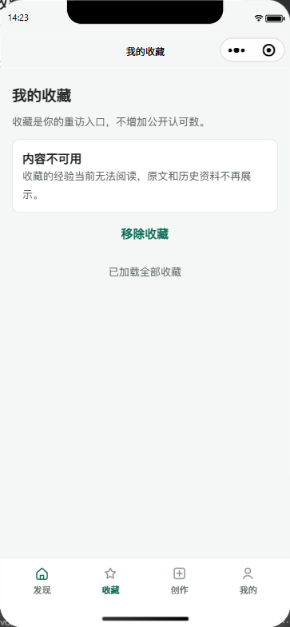
测试文章下架后仅剩不可用占位，数据严格为articleId/available；取消后total为0。
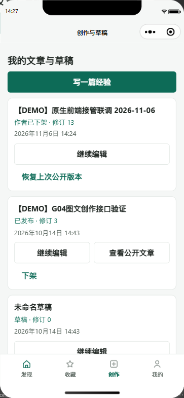
状态区分及多草稿入口，日期按设备时区可读显示；测试文章最终仍下架。
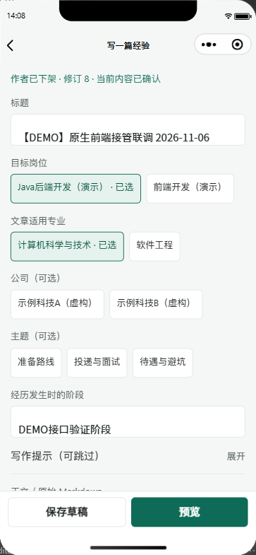
载入真实草稿和分类。阶段与当前个人阶段分开。
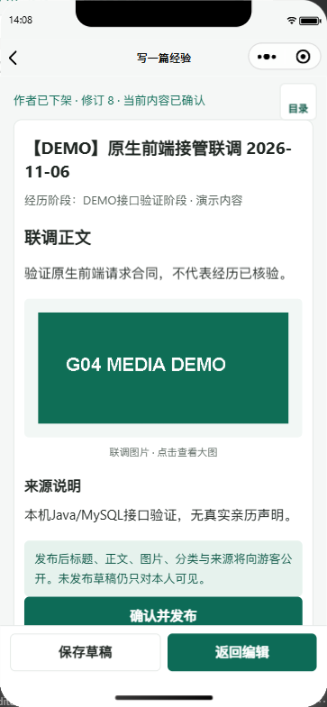
带鉴权下载后的真实图片；源文章处于作者下架状态。
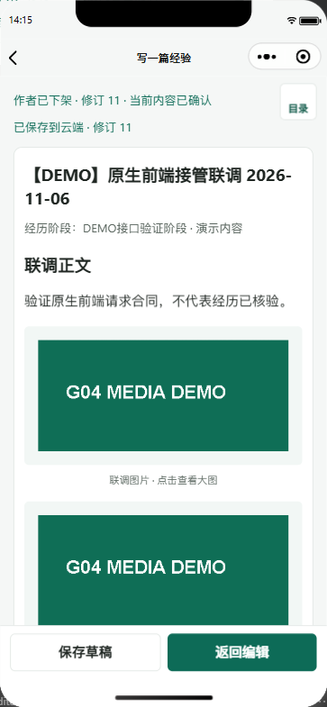
Computer Use从正常选图器选PNG，上传done并插入正文，真实保存修订11。
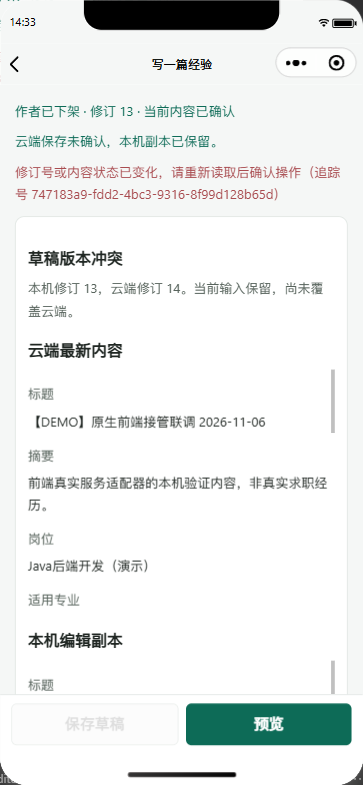
本机修订13/云端14；保存失败且保留本机内容，未自动覆盖。
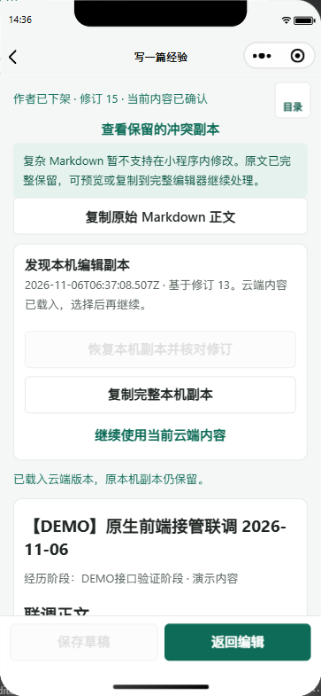
真实草稿15，complexSource/readOnly/preview均true；保留原文及副本。末尾按钮文案最终统一为查看字段。
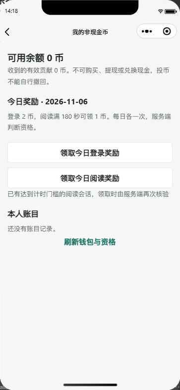
真实余额、奖励规则、服务端计时资格与空账本；没有领取奖励。
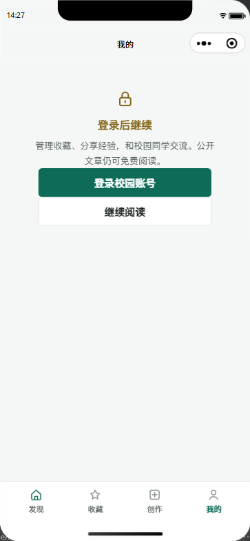
真实退出撤销会话，本人资料与钱包为null，未保留受限界面。